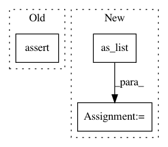

135a56e0935fbb04811f8ce7b9f514f498212f71,niftynet/layer/crf.py,,ftheta,#Any#Any#Any#Any#Any#Any#,148
Before Change
// Compatibility Transform
spatial_dim = infer_spatial_rank(U)
assert spatial_dim == 2 or 3, \
"Currently CRFAsRNNLayer supports 2D/3D images."
full_stride = expand_spatial_params(1, spatial_dim)
Q3 = tf.nn.convolution(input=Q2,
filter=mu,
strides=full_stride,
After Change
:return: updated mean-field distribution
batch_size, n_ch = U.shape.as_list()[0], U.shape.as_list()[-1]
n_voxels = np.prod(U.shape.as_list()[:-1])
H1 = tf.reshape(tf.nn.softmax(H1), [batch_size, -1, n_ch])
Q1 = 0
for idx, permutohedral in enumerate(permutohedrals):
In pattern: SUPERPATTERN
Frequency: 3
Non-data size: 3
Instances
Project Name: NifTK/NiftyNet
Commit Name: 135a56e0935fbb04811f8ce7b9f514f498212f71
Time: 2018-07-25
Author: wenqi.li@ucl.ac.uk
File Name: niftynet/layer/crf.py
Class Name:
Method Name: ftheta
Project Name: GPflow/GPflowOpt
Commit Name: 4b98314d8e16c53aae2c334fe391faff9d95b011
Time: 2017-05-25
Author: joachim.vanderherten@ugent.be
File Name: testing/test_acquisition.py
Class Name: _TestAcquisition
Method Name: test_result_shape
Project Name: adalca/neuron
Commit Name: f356f3519b1ff2f1d10701b07c32afbf7361ce01
Time: 2019-05-10
Author: adalca@mit.edu
File Name: neuron/models.py
Class Name:
Method Name: single_ae